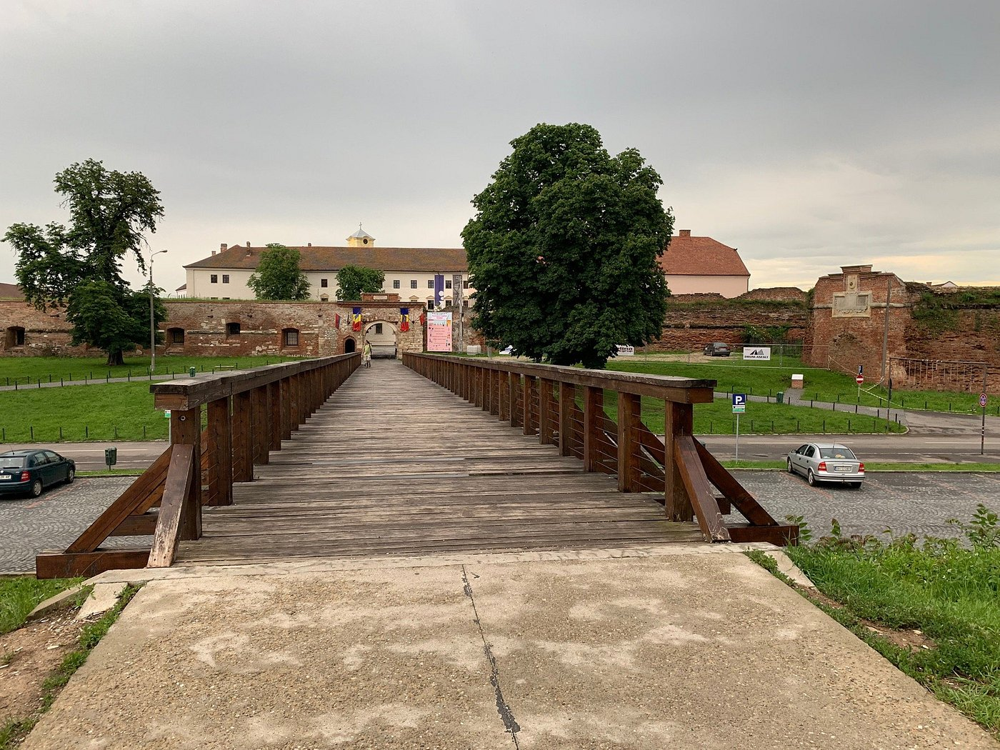

Cetaea Oradea
Descriere
Cetatea Oradea reprezintă un monument arhitectonic din România, una dintre puținele cetăți utilizate și în prezent. Se spune despre cetate că nu putea fi cucerită din cauza vastelor rețele subterane de legături cu exteriorul. Șanțul cu apă al cetății era umplut în caz de asediu cu apă termală (prin aducțiuni) din râul Peța.